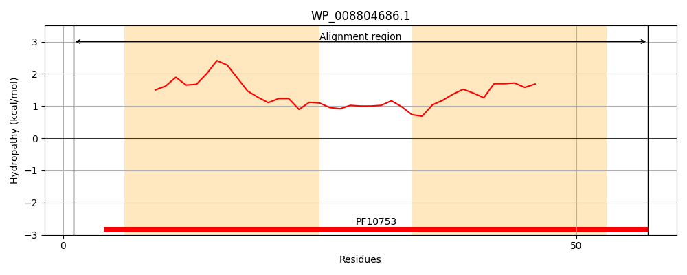
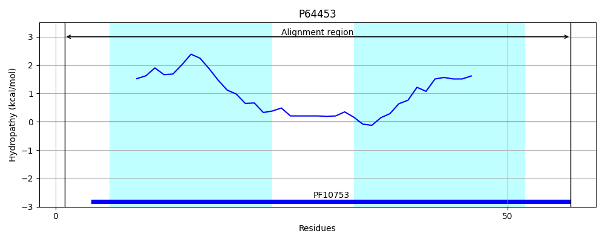
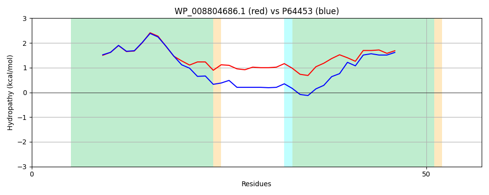

Hit Accession: P64453
Hit TCID: 1.C.130.1.1
Hit Description: gnl|BL_ORD_ID|11203 gnl|TC-DB|P64453|1.C.130.1.1 Orphan toxin OrtT OS=Escherichia coli (strain K12) OX=83333 GN=ortT PE=1 SV=2
Mach Len: 57
e:0.000000
Query TMS Count : 2
Hit TMS Count: 2
TMS-Overlap Score: 1.900000
Predicted Substrates:None
BLAST Alignment:
| Protein Hydropathy Plots: | |
|---|---|
|  |  |
Pairwise Alignment-Hydropathy Plot: | |
|  | |